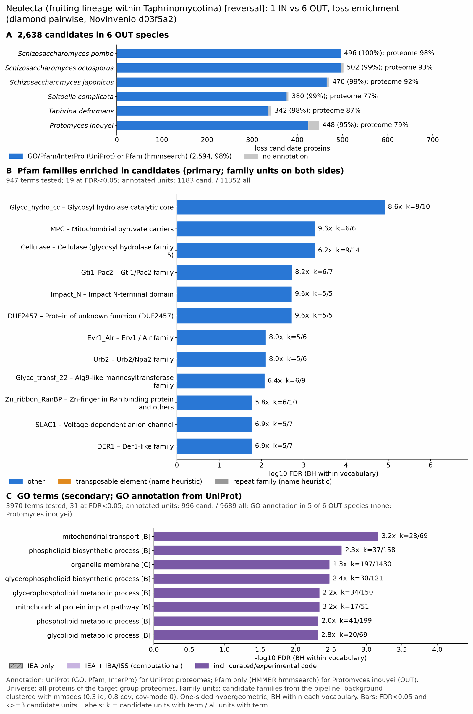

yc rev neolecta: functional enrichment (loss)
One-sided hypergeometric test per term; Benjamini-Hochberg FDR within each scope, level and vocabulary. Candidates are the loss candidates: gene families present in the OUT group and absent from the IN group. Universe: proteome. Background clustered: True (30331 sequences in 14714 clusters, mmseqs easy-cluster --min-seq-id 0.3 -c 0.8). Family level: one unit per candidate family and per background cluster.
Sources: Pfam: 2026-01-27-Pfam38.2; InterPro entries: 110.0; GO: releases/2026-07-26; analysis generated 2026-10-24T14:59:06. Source tables: /bigdata/stajichlab/jstajich/projects/NovInvenio_Investigations/studies/fungi/yeast_convergence/yc_rev_neolecta/analysis/enrichment/outputs/loss/proteome_clustered.
Full record: PROVENANCE. Run report: report.html.
Related: yeast_convergence: comparison across contrasts
- Annotation provenance is not fully recorded: PROVENANCE.yaml lists the per-species annotation files and their checksums, but not the UniProt release they come from.
- GO results are secondary. GO annotations include computational evidence (IEA, IBA); the GO evidence column shows if a term has non-IEA support.
- Candidate families (pipeline clustering of candidates) and background clusters (mmseqs clustering of the background proteome) are made by different runs, so family-level counts are not fully comparable.
- GO and InterPro cover only 5 of 6 species: Spom, Schiocto, Schijapo, Saitcomp, Taphdefo. No GO and InterPro annotation for Protinou; this species adds no units to the GO and InterPro tests, so those results describe the covered species only.
Summary figure

Annotation coverage
Fraction of proteins with at least one term per vocabulary. Universe = all proteins of the species; candidates = the candidate set.
| Species | Set | Proteins | Pfam | Pfam clan | InterPro | GO | Any |
|---|---|---|---|---|---|---|---|
| Spom | universe | 5129 | 89.7% | 69.8% | 91.7% | 97.7% | 98.1% |
| Spom | candidates | 496 | 96.0% | 69.2% | 99.2% | 99.8% | 100.0% |
| Schiocto | universe | 4964 | 88.8% | 69.6% | 91.2% | 87.2% | 92.8% |
| Schiocto | candidates | 502 | 93.6% | 67.5% | 98.8% | 91.2% | 99.0% |
| Schijapo | universe | 4862 | 89.4% | 70.4% | 91.9% | 85.2% | 92.4% |
| Schijapo | candidates | 470 | 92.1% | 65.5% | 98.9% | 90.0% | 98.9% |
| Saitcomp | universe | 7118 | 73.4% | 60.2% | 76.9% | 67.8% | 77.1% |
| Saitcomp | candidates | 380 | 94.7% | 68.2% | 98.7% | 88.4% | 99.0% |
| Taphdefo | universe | 4650 | 82.8% | 67.3% | 87.0% | 76.6% | 87.3% |
| Taphdefo | candidates | 342 | 92.7% | 65.2% | 98.0% | 87.4% | 98.2% |
| Protinou | universe | 6246 | 79.3% | 63.7% | 0.0% | 0.0% | 79.3% |
| Protinou | candidates | 448 | 94.6% | 68.5% | 0.0% | 0.0% | 94.6% |
| ALL_OUT | universe | 32969 | 83.1% | 66.3% | 70.4% | 66.3% | 86.8% |
| ALL_OUT | candidates | 2638 | 94.0% | 67.4% | 82.0% | 76.2% | 98.3% |
Tests summary
Per vocabulary: terms with FDR < 0.05 / terms tested. Protein level counts proteins; family level counts candidate families and background clusters.
| Scope | Level | Cand. units | Pfam sig / tested | Pfam clan sig / tested | InterPro sig / tested | GO sig / tested |
|---|---|---|---|---|---|---|
| whole_set | family | 1266 | 19 / 947 | 4 / 333 | 19 / 1509 | 31 / 3970 |
| whole_set | protein | 2638 | 317 / 3546 | 58 / 456 | 439 / 6133 | 310 / 5837 |
| Protinou | family | 437 | 1 / 323 | 0 / 194 | 0 / 0 (not_available_no_annotated_units) | 0 / 0 (not_available_no_annotated_units) |
| Protinou | protein | 448 | 2 / 370 | 0 / 203 | 0 / 0 (not_available_no_annotated_units) | 0 / 0 (not_available_no_annotated_units) |
| Saitcomp | family | 375 | 0 / 248 | 0 / 216 | 0 / 639 | 0 / 1990 |
| Saitcomp | protein | 380 | 0 / 289 | 0 / 225 | 0 / 733 | 0 / 2082 |
| Schijapo | family | 454 | 0 / 151 | 0 / 166 | 0 / 444 | 0 / 2540 |
| Schijapo | protein | 470 | 0 / 203 | 1 / 179 | 0 / 562 | 0 / 2649 |
| Schiocto | family | 483 | 0 / 151 | 0 / 166 | 0 / 443 | 0 / 2617 |
| Schiocto | protein | 502 | 0 / 201 | 0 / 173 | 0 / 563 | 0 / 2739 |
| Spom | family | 477 | 0 / 154 | 0 / 170 | 0 / 454 | 1 / 3005 |
| Spom | protein | 496 | 0 / 220 | 0 / 180 | 0 / 598 | 8 / 3161 |
| Taphdefo | family | 339 | 1 / 142 | 0 / 168 | 2 / 443 | 0 / 1624 |
| Taphdefo | protein | 342 | 2 / 167 | 0 / 173 | 2 / 493 | 1 / 1671 |
Top 25 Pfam terms (whole set, family level)
25 rows shown, ordered by FDR then p-value; 19 have FDR < 0.05 (bold).
| Term | Name | k / N cand. | n / M bg | Fold | FDR (BH) |
|---|---|---|---|---|---|
| PF11790 | Glyco_hydro_cc: Glycosyl hydrolase catalytic core | 9 / 1183 | 10 / 11352 | 8.636 | 1.21e-05 |
| PF03650 | MPC: Mitochondrial pyruvate carriers | 6 / 1183 | 6 / 11352 | 9.596 | 5.47e-04 |
| PF00150 | Cellulase: Cellulase (glycosyl hydrolase family 5) | 9 / 1183 | 14 / 11352 | 6.169 | 5.47e-04 |
| PF09729 | Gti1_Pac2: Gti1/Pac2 family | 6 / 1183 | 7 / 11352 | 8.225 | 0.002 |
| PF01205 | Impact_N: Impact N-terminal domain | 5 / 1183 | 5 / 11352 | 9.596 | 0.002 |
| PF10446 | DUF2457: Protein of unknown function (DUF2457) | 5 / 1183 | 5 / 11352 | 9.596 | 0.002 |
| PF04777 | Evr1_Alr: Erv1 / Alr family | 5 / 1183 | 6 / 11352 | 7.997 | 0.008 |
| PF10441 | Urb2: Urb2/Npa2 family | 5 / 1183 | 6 / 11352 | 7.997 | 0.008 |
| PF03901 | Glyco_transf_22: Alg9-like mannosyltransferase family | 6 / 1183 | 9 / 11352 | 6.397 | 0.008 |
| PF00641 | Zn_ribbon_RanBP: Zn-finger in Ran binding protein and others | 6 / 1183 | 10 / 11352 | 5.758 | 0.017 |
| PF03595 | SLAC1: Voltage-dependent anion channel | 5 / 1183 | 7 / 11352 | 6.854 | 0.017 |
| PF04511 | DER1: Der1-like family | 5 / 1183 | 7 / 11352 | 6.854 | 0.017 |
| PF09335 | VTT_dom: VTT domain | 5 / 1183 | 8 / 11352 | 5.997 | 0.028 |
| PF03134 | TB2_DP1_HVA22: TB2/DP1, HVA22 family | 4 / 1183 | 5 / 11352 | 7.677 | 0.028 |
| PF05180 | zf-DNL: DNL zinc finger | 4 / 1183 | 5 / 11352 | 7.677 | 0.028 |
| PF09271 | LAG1-DNAbind: LAG1, DNA binding | 4 / 1183 | 5 / 11352 | 7.677 | 0.028 |
| PF09816 | EAF: RNA polymerase II transcription elongation factor | 4 / 1183 | 5 / 11352 | 7.677 | 0.028 |
| PF16213 | DCB: Mon2/Sec7/BIG1-like, dimerisation and cyclophilin-binding domain | 4 / 1183 | 5 / 11352 | 7.677 | 0.028 |
| PF00096 | zf-C2H2: Zinc finger, C2H2 type | 15 / 1183 | 60 / 11352 | 2.399 | 0.049 |
| PF02953 | zf-Tim10_DDP: Tim10/DDP family zinc finger | 4 / 1183 | 6 / 11352 | 6.397 | 0.070 |
| PF01408 | GFO_IDH_MocA: Oxidoreductase family, NAD-binding Rossmann fold | 6 / 1183 | 15 / 11352 | 3.838 | 0.125 |
| PF00411 | Ribosomal_S11: Ribosomal protein S11 | 4 / 1183 | 7 / 11352 | 5.483 | 0.125 |
| PF05132 | RNA_pol_Rpc4: RNA polymerase III RPC4 | 4 / 1183 | 7 / 11352 | 5.483 | 0.125 |
| PF08325 | WLM: WLM domain | 4 / 1183 | 7 / 11352 | 5.483 | 0.125 |
| PF08550 | GATA_AreA: Nitrogen regulatory protein areA, GATA-like domain | 5 / 1183 | 11 / 11352 | 4.362 | 0.125 |
Top 25 InterPro terms (whole set, family level)
25 rows shown, ordered by FDR then p-value; 19 have FDR < 0.05 (bold).
| Term | Name | k / N cand. | n / M bg | Fold | FDR (BH) |
|---|---|---|---|---|---|
| IPR024655 | Domain:Asl1-like, glycosyl hydrolase catalytic domain | 7 / 1077 | 7 / 10491 | 9.741 | 8.91e-05 |
| IPR053183 | 7 / 1077 | 7 / 10491 | 9.741 | 8.91e-05 | |
| IPR035952 | Homologous_superfamily:Rhomboid-like superfamily | 11 / 1077 | 23 / 10491 | 4.659 | 0.003 |
| IPR050386 | Family:Glycosyl Hydrolase 5 (Cellulase A) | 7 / 1077 | 10 / 10491 | 6.819 | 0.004 |
| IPR001547 | Domain:Glycoside hydrolase, family 5 | 7 / 1077 | 11 / 10491 | 6.199 | 0.008 |
| IPR018608 | Family:Global transcription regulator | 5 / 1077 | 6 / 10491 | 8.117 | 0.016 |
| IPR004695 | Family:Transporter protein SLAC1/Mae1/ Ssu1/TehA | 5 / 1077 | 7 / 10491 | 6.958 | 0.030 |
| IPR005599 | Family:GPI mannosyltransferase | 5 / 1077 | 7 / 10491 | 6.958 | 0.030 |
| IPR007599 | Family:Derlin | 5 / 1077 | 7 / 10491 | 6.958 | 0.030 |
| IPR038665 | Homologous_superfamily:Voltage-dependent anion channel superfamily | 5 / 1077 | 7 / 10491 | 6.958 | 0.030 |
| IPR036236 | Homologous_superfamily:Zinc finger C2H2 superfamily | 19 / 1077 | 78 / 10491 | 2.373 | 0.036 |
| IPR007853 | Domain:Zinc finger, DNL-type | 4 / 1077 | 5 / 10491 | 7.793 | 0.043 |
| IPR017905 | Domain:ERV/ALR sulfhydryl oxidase domain | 4 / 1077 | 5 / 10491 | 7.793 | 0.043 |
| IPR018849 | Domain:Nucleolar 27S pre-rRNA processing, Urb2/Npa2, C-terminal | 4 / 1077 | 5 / 10491 | 7.793 | 0.043 |
| IPR024158 | Family:Mitochondrial import protein TIM15 | 4 / 1077 | 5 / 10491 | 7.793 | 0.043 |
| IPR036774 | Homologous_superfamily:ERV/ALR sulfhydryl oxidase domain superfamily | 4 / 1077 | 5 / 10491 | 7.793 | 0.043 |
| IPR039799 | Family:Sulfhydryl oxidase ALR/ERV | 4 / 1077 | 5 / 10491 | 7.793 | 0.043 |
| IPR052609 | Family:Ribosome Biogenesis Regulator | 4 / 1077 | 5 / 10491 | 7.793 | 0.043 |
| IPR050797 | 6 / 1077 | 12 / 10491 | 4.87 | 0.049 | |
| IPR013536 | Domain:WLM domain | 4 / 1077 | 6 / 10491 | 6.494 | 0.100 |
| IPR051076 | Family:Golgi apparatus membrane protein TVP38 | 4 / 1077 | 6 / 10491 | 6.494 | 0.100 |
| IPR017853 | Homologous_superfamily:Glycoside hydrolase superfamily | 16 / 1077 | 71 / 10491 | 2.195 | 0.129 |
| IPR001971 | Family:Small ribosomal subunit protein uS11 | 4 / 1077 | 7 / 10491 | 5.566 | 0.174 |
| IPR006694 | Domain:Fatty acid hydroxylase | 4 / 1077 | 7 / 10491 | 5.566 | 0.174 |
| IPR032816 | Domain:VTT domain | 4 / 1077 | 7 / 10491 | 5.566 | 0.174 |
Top 15 GO terms (whole set, family level) — secondary, computational evidence (IEA/IBA) included
15 rows shown, ordered by FDR then p-value; 15 have FDR < 0.05 (bold).
| Term | Name | k / N cand. | n / M bg | Fold | FDR (BH) | GO evidence | Families with non-IEA |
|---|---|---|---|---|---|---|---|
| GO:0006839 | biological_process:mitochondrial transport | 23 / 996 | 69 / 9689 | 3.243 | 6.82e-04 | has_non_IEA | 16 |
| GO:0008654 | biological_process:phospholipid biosynthetic process | 37 / 996 | 158 / 9689 | 2.278 | 0.002 | has_non_IEA | 22 |
| GO:0031090 | cellular_component:organelle membrane | 197 / 996 | 1430 / 9689 | 1.34 | 0.003 | has_non_IEA | 102 |
| GO:0046474 | biological_process:glycerophospholipid biosynthetic process | 30 / 996 | 121 / 9689 | 2.412 | 0.003 | has_non_IEA | 15 |
| GO:0006650 | biological_process:glycerophospholipid metabolic process | 34 / 996 | 150 / 9689 | 2.205 | 0.005 | has_non_IEA | 17 |
| GO:7770058 | biological_process:mitochondrial protein import pathway | 17 / 996 | 51 / 9689 | 3.243 | 0.005 | has_non_IEA | 13 |
| GO:0045017 | biological_process:glycerolipid biosynthetic process | 30 / 996 | 127 / 9689 | 2.298 | 0.005 | has_non_IEA | 15 |
| GO:0006644 | biological_process:phospholipid metabolic process | 41 / 996 | 199 / 9689 | 2.004 | 0.005 | has_non_IEA | 24 |
| GO:0006664 | biological_process:glycolipid metabolic process | 20 / 996 | 69 / 9689 | 2.82 | 0.005 | has_non_IEA | 10 |
| GO:1903509 | biological_process:liposaccharide metabolic process | 20 / 996 | 69 / 9689 | 2.82 | 0.005 | has_non_IEA | 10 |
| GO:0005976 | biological_process:polysaccharide metabolic process | 23 / 996 | 87 / 9689 | 2.572 | 0.005 | has_non_IEA | 9 |
| GO:0031390 | cellular_component:Ctf18 RFC-like complex | 7 / 996 | 11 / 9689 | 6.19 | 0.009 | has_non_IEA | 3 |
| GO:0008610 | biological_process:lipid biosynthetic process | 49 / 996 | 269 / 9689 | 1.772 | 0.014 | has_non_IEA | 29 |
| GO:0071966 | biological_process:fungal-type cell wall polysaccharide metabolic process | 11 / 996 | 28 / 9689 | 3.822 | 0.015 | has_non_IEA | 6 |
| GO:0033185 | cellular_component:dolichol-phosphate-mannose synthase complex | 5 / 996 | 6 / 9689 | 8.107 | 0.016 | has_non_IEA | 1 |
Actin cytoskeleton controls
Known actin-related families and how many of their proteins pass each filter. Protein ID columns are left out.
| control | pfam_ids | desc_regex | OUT_universe | OUT_in_matrix | OUT_pass_outgroup_rule | candidates | near_miss_in1 | near_miss_in2 | n_Spom | n_Schiocto | n_Schijapo | n_Saitcomp | n_Taphdefo | n_Protinou | n_Nirr |
|---|---|---|---|---|---|---|---|---|---|---|---|---|---|---|---|
| Arp2/3 ARPC2 (P34-Arc) | PF04045 | 6 | 6 | 6 | 0 | 6 | 0 | 1 | 1 | 1 | 1 | 1 | 1 | 1 | |
| Arp2/3 ARPC3 (P21-Arc) | PF04062 | 6 | 6 | 6 | 6 | 0 | 0 | 1 | 1 | 1 | 1 | 1 | 1 | 0 | |
| Arp2/3 ARPC4 | PF05856 | 6 | 6 | 6 | 0 | 6 | 0 | 1 | 1 | 1 | 1 | 1 | 1 | 1 | |
| Arp2/3 ARPC5 (P16-Arc) | PF04699 | 5 | 5 | 5 | 0 | 5 | 0 | 1 | 1 | 1 | 1 | 0 | 1 | 1 | |
| Arp2/3 ARPC1 (description only) | arp2/3 complex.*(41|p41|subunit 1)|ARPC1 | 0 | 0 | 0 | 0 | 0 | 0 | 0 | 0 | 0 | 0 | 0 | 0 | 1 | |
| Arp2 / Arp3 (description only) | actin-related protein (2|3)\b|\bARP[23]\b | 32 | 32 | 32 | 4 | 28 | 0 | 7 | 7 | 7 | 5 | 6 | 0 | 6 | |
| WAVE complex NCKAP1 | PF09735 | 0 | 0 | 0 | 0 | 0 | 0 | 0 | 0 | 0 | 0 | 0 | 0 | 0 | |
| WAVE complex CYFIP (FragX_IP) | PF05994 | 0 | 0 | 0 | 0 | 0 | 0 | 0 | 0 | 0 | 0 | 0 | 0 | 0 | |
| WAVE complex ABI | PF07815|PF27594 | 0 | 0 | 0 | 0 | 0 | 0 | 0 | 0 | 0 | 0 | 0 | 0 | 0 | |
| SCAR/WAVE (SCAR_helical) | PF27569 | 0 | 0 | 0 | 0 | 0 | 0 | 0 | 0 | 0 | 0 | 0 | 0 | 0 | |
| WASP family (WH1) | PF00568 | 6 | 6 | 6 | 0 | 6 | 0 | 1 | 1 | 1 | 1 | 1 | 1 | 1 | |
| WH2 motif (WASP, WAVE, others) | PF02205 | 14 | 14 | 14 | 6 | 8 | 0 | 2 | 2 | 2 | 2 | 3 | 3 | 2 | |
| Formin FH2 | PF02181 | 14 | 14 | 9 | 0 | 9 | 0 | 3 | 3 | 3 | 2 | 1 | 2 | 1 | |
| Formin Drf_GBD / Drf_FH3 / Drf_DAD | PF06371|PF06367|PF06345 | 19 | 19 | 14 | 0 | 14 | 0 | 4 | 4 | 4 | 3 | 2 | 2 | 2 | |
| Ena/VASP (VASP_tetra) | PF08776 | 0 | 0 | 0 | 0 | 0 | 0 | 0 | 0 | 0 | 0 | 0 | 0 | 0 | |
| Coronin (description only) | coronin | 4 | 4 | 4 | 0 | 4 | 0 | 1 | 1 | 1 | 1 | 0 | 0 | 1 | |
| Cortactin (HS1_rep) | PF02218 | 0 | 0 | 0 | 0 | 0 | 0 | 0 | 0 | 0 | 0 | 0 | 0 | 0 | |
| Myosin 2 tail (Myosin_tail_1) | PF01576 | 0 | 0 | 0 | 0 | 0 | 0 | 0 | 0 | 0 | 0 | 0 | 0 | 0 | |
| Myosin head (all myosins) | PF00063 | 25 | 25 | 25 | 0 | 25 | 0 | 5 | 5 | 5 | 3 | 3 | 4 | 5 |
Page written by bin/generate_enrichment_page.py.